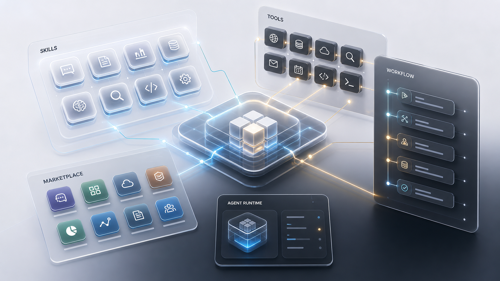

RPA固定流程执行器，擅长确定、重复、低异常任务。
Agent目标理解、任务规划、工具编排与自动化资产生成器。
SkillAgent 的可复用能力模块，让经验沉淀为方法包。
Marketplace把场景化自动化能力做成可分发、可维护、可收费的产品。

Agent 应用不是一堆 Skill
它还需要 Tool、Workflow、权限、日志、计费、审核与交付界面。
RPA 更像确定性执行层
在老系统、强审计、低容错流程里，RPA 很可能继续长期存在。
Agent 与 RPA 自动化选择球状 3D 仪表盘
按自动化落地的关键维度给 Agent、RPA 与混合架构打分。分值越高，轨迹越贴近球体外圈；绿色轨迹表示“Agent 负责理解、生成、维护，RPA/API/脚本负责稳定执行”的综合方案。
Hybrid
综合最优：Agent 编排 + RPA 执行
RPA 优先
固定页面、批量重复、强审计、低运行成本。
Agent 优先
需求模糊、变化频繁、需要判断、分析或生成。
默认混合
Agent 做理解和维护，RPA/API/脚本做稳定执行。
低成本 + 稳定运行 + 治理审计 → RPA
适合财务录入、报表下载、老系统搬运这类低变化流程。
经济成本稳定运行治理审计
需求变化 + 判断生成 + 未来扩展 → Agent
适合分析归因、内容生成、跨系统规划和脚本生成。
需求适配学习成本未来发展
复杂判断 + 强执行 + 可审计 → 混合
Agent 负责理解和维护，RPA/API/脚本负责确定性执行。
执行效率稳定运行治理审计
重复使用 + 场景变化 → Skill 化工作流
把 Agent 能力沉淀为 Skill，再接执行器，适合应用市场化。
重复使用需求场景应用市场
图例
RPA确定性执行
Agent理解与编排
Hybrid综合落地
球面经纬线表示决策空间，维度点绕球体分布；轨迹越靠外，代表该方案越适合承担该维度的自动化价值。
可拖拽旋转球体。外圈越饱满，代表方案综合能力越均衡。
没有匹配的章节，换个关键词试试。